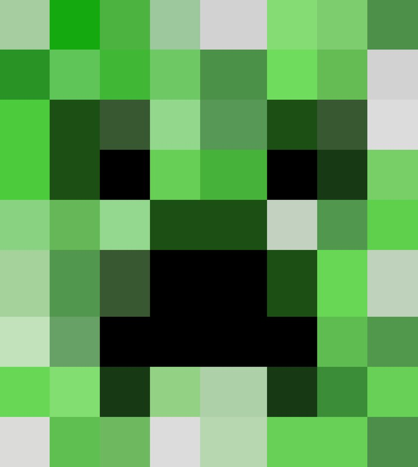

Hide The Creeper

Goal:
Find the Creeper!
Steps:
- Find the Hide the Creeper recipe program in Eclipse.
- Set your canvas size
size(width, height) //in settings method
- Download a background image. Something with green where creeper can hide.
- Save the image.
- Drop the file into the /images folder.
- Load it as the background (it must be same size as your canvas)
PImage minecraft = loadImage("minecraft.png"); //in setup method minecraft.resize(width, height); //in setup method background(minecraft); //in setup method - Load the creeper image into your sketch
- Download a Creeper image
- Drop the image onto your sketch
- Use the code below to draw the image (make sure you put the code in the right place)
PImage creeper; //at the top of your program creeper=loadImage("creeper.png"); //in setup method image(creeper, mouseX, mouseY); //in draw method - Right after it’s loaded, resize the creeper image so that it is small and can hide.
creeper.resize(width, height); //in setup method
- Pick a place to hide your creeper.
- Use two variables to store the location (x and y) of the creeper, and initialize them (at the top of your sketch).
- Change your code so that the creeper image is drawn at this location.
- In the draw method, draw a small red ellipse where the mouse clicks.
- If mouseX and mouseY are near the location of your creeper, make the circle green.
Note: you will need to check the x and y values separately if you use the code below.
boolean isNear(int a, int b) { if (abs(a - b) < 10) return true; else return false; } - Let the user know that they found the creeper.
- Option: Add more creepers, or move the creeper after they find it.